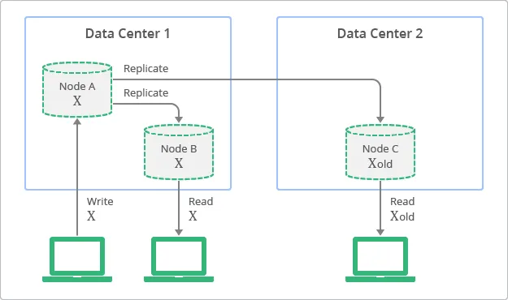
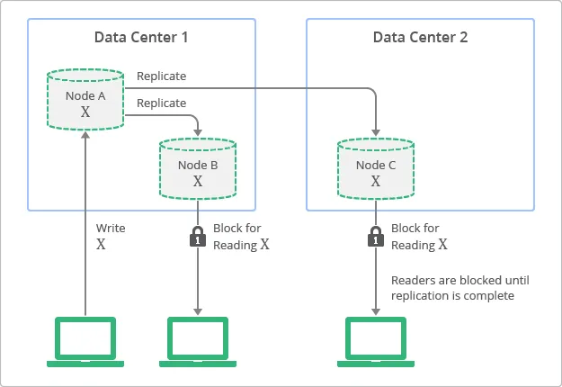

Eventual Consistency vs Strong Consistency
Eventual Consistency Link to heading
Eventual consistency is a theoretical guarantee that, provided no new updates to an entity are made, all reads of the entity will eventually return the last updated value. The Internet Domain Name System (DNS) is a well-known example of a system with an eventual consistency model. DNS servers do not necessarily reflect the latest values but, rather, the values are cached and replicated across many directories over the Internet. It takes a certain amount of time to replicate modified values to all DNS clients and servers. However, the DNS system is a very successful system that has become one of the foundations of the Internet. It is highly available and has proven to be extremely scalable, enabling name lookups to over a hundred million devices across the entire Internet.
Figure illustrates the concept of replication with eventual consistency. Although replicas are always available to read, some replicas may be inconsistent with the latest write on the originating node, at a particular moment in time. In the diagram, Node A is the originating node and node B and C are the replicas.

Strong Consistency Link to heading
In contrast, traditional relational databases have been designed based on the concept of strong consistency, also called immediate consistency. This means that data viewed immediately after an update will be consistent for all observers of the entity.
To have strong consistency, developers must compromise on the scalability and performance of their application. Simply put, data has to be locked during the period of update or replication process to ensure that no other processes are updating the same data.
A conceptual view of the deployment topology and replication process with strong consistency is shown in below figure. In this diagram, you can see how replicas always have values consistent with the originating node, but are not accessible until the update finishes.

Use Cases Link to heading
Non-relational databases have become popular recently, especially for web applications that require high-scalability and performance with high-availability. Non-relational databases let developers choose an optimal balance between strong consistency and eventual consistency for each application. This allows developers to combine the benefits of both worlds.
For example, information such as “knowing who in your buddy list is online at given time” or “knowing how many users have +1’d your post” are use cases where strong consistency is not required. Scalability and performance can be provided for these use cases by leveraging eventual consistency. Use cases which require strong consistency include information such as “whether or not a user finished the billing process” or “the number of points a game player earned during a battle session”.
To generalize the examples just given, use cases with very large numbers of entities often suggest that eventual consistency is the best model. If there are a very large number of results in a query, then the user experience may not be affected by the inclusion or exclusion of specific entities. On the other hand, use cases with a small number of entities and a narrow context suggest that strong consistency is required. The user experience will be affected because the context will make users aware of which entities should be included or excluded.